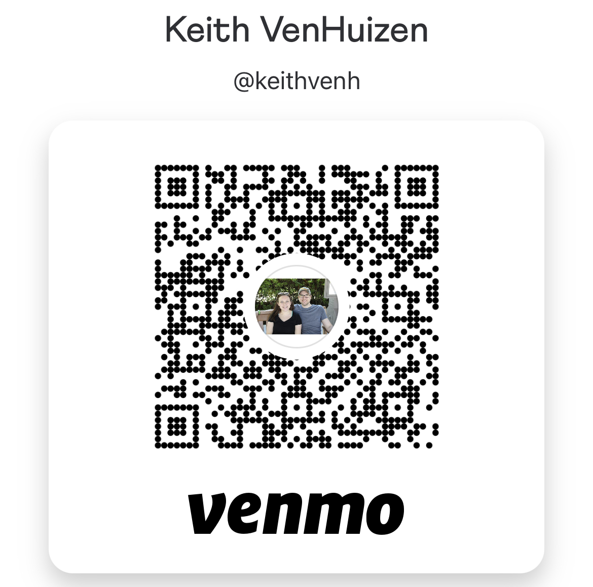

Donate with Venmo
Donate with Paypal & YWAM

Donating to support our mission is quick, easy, and secure. Your donation directly supports our mission and helps us continue our work. You can make a one-time donation for the minivan or set up a recurring donation for ongoing support.